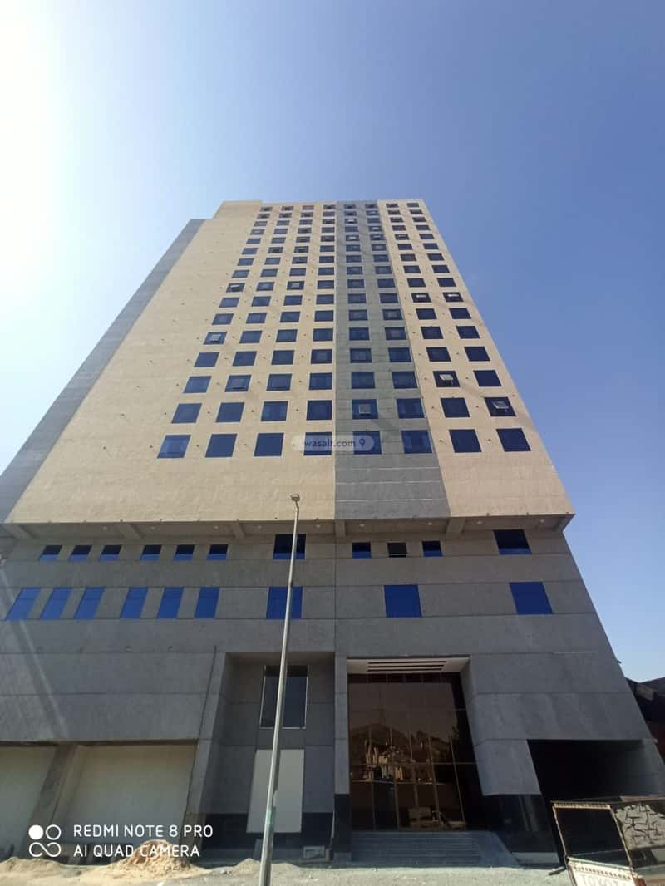
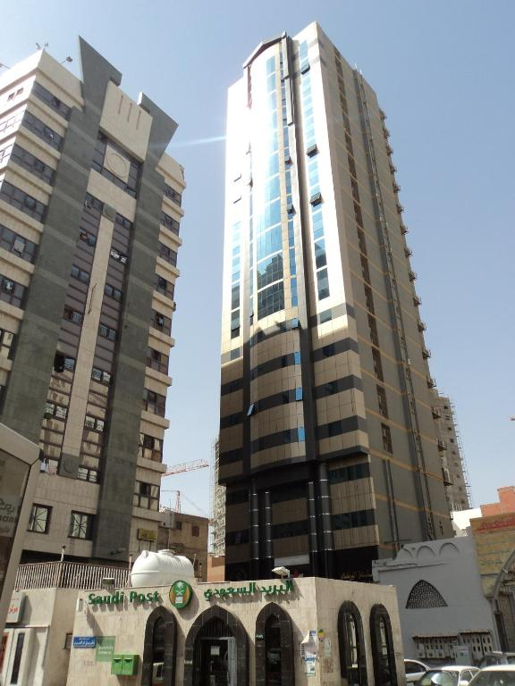

مشروع تطوير حي العزيزية السكني بمكة
لعبت بطحاء مكة دورًا محوريًا في هذا المشروع السكني الضخم بـحي العزيزية، مكة المكرمة. قمنا بتوريد كميات هائلة من البطحاء والدفان، مما ساهم بشكل مباشر في سرعة وجودة إنجاز الأعمال الإنشائية. هذا المشروع يعكس قدرتنا على تلبية احتياجات مشاريع البناء السكنية الكبرى بكفاءة عالية.

مشروع تطوير البنية التحتية للطرق بوسط مكة
في قلب مكة، شاركنا في هذا المشروع الحيوي لتطوير شبكة الطرق من خلال توريد السبيز والبطحاء. هدفنا كان تعزيز سهولة التنقل وخدمة سكان المنطقة والزوار بفاعلية. خبرتنا في توريد مواد البناء للطرق تجعلنا خيارًا رائدًا لـمشاريع البنية التحتية في مكة.

إنشاء مركز تجاري حديث في حي النزهة بمكة
قمنا بتوفير جميع احتياجات هذا المركز التجاري الجديد في حي النزهة، مكة من مواد الدفان والبطحاء الأساسية. التزامنا بالجودة العالية والتسليم في المواعيد المحددة جعلنا الشريك المفضل في هذا المشروع، مما يؤكد مكانتنا كأحد أفضل شركات توريد مواد البناء في مكة لـالمشاريع التجارية.

توسعة فندق سياحي جديد بالقرب من الحرم بمكة
ساهمت بطحاء مكة في دعم قطاع السياحة الحيوية بتوريد مواد الدفان اللازمة لتوسعة فندق سياحي كبير بالقرب من الحرم المكي الشريف. يضاف هذا المشروع إلى سجلنا الحافل في توريد مواد البناء للمشاريع الفندقية التي تخدم زوار بيت الله الحرام.